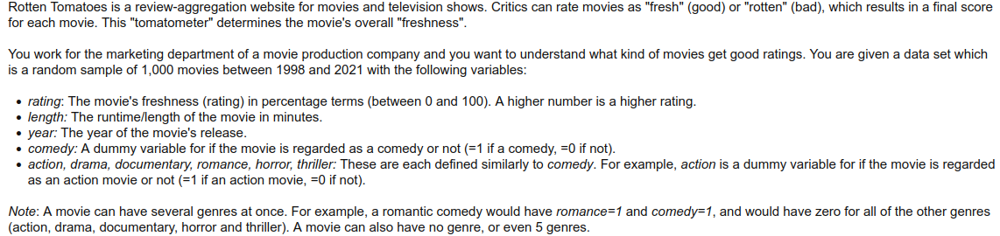
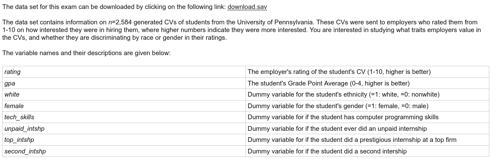

Tutorial 3 Questions
Introduction
In this tutorial we will study two datasets. The first is the rottentomatoes.csv dataset. This featured in the exam in October 2021. The dataset contains the Rotten Tomatoes rating of a random sample of movies with their length, year of release, and dummy variables for their genres. Here is a screenshot of the description from the exam:

The second is the cv.csv dataset. This featured in the resit exam in January 2020. This dataset contains employers’ ratings of different CVs, where we observe the applicant’s GPA and dummy variables for ethnicity, gender, skills and experience.

Exercises
- Using the rottentomatoes.csv dataset, regress
ratingonlengthandyear. Interpret each of the estimated regression coefficients. - Using the rottentomatoes.csv dataset, regress
ratingon all of the other variables. Use this model to answer the following questions:- Report a 95% confidence interval for the coefficient on
romanceand interpret it. - Which genres are individually statistically significant at the 5% level, and which are not?
- Test if this model is useful at the 1% level using a critical value approach.
- What proportion of the variation in
ratingis left unexplained by the model? - Test the claim that “older movies are better” for a given length and genre. Use a p-value approach with a 5% level.
- Obtain a 95% confidence interval for the average rating of 90-minute romantic comedy movies from 2010.
- Report a 95% confidence interval for the coefficient on
- With the cv.csv dataset, regress
ratingon all 7 of the other variables and use it to test the following claims (each at the 5% level):- “Displaying technical skills has an impact on your CV’s rating.”
- “Doing an second internship makes your CV look better from an employer’s perspective.”
- “Doing an unpaid internship on average raises your CV score by more than 0.2 points.”
- “Employers on average rate female/male or white/nonwhite CVs differently, holding everything else fixed.”